Figure 4.1 shows the use cases of PIP. The main actor is the user. Four secondary actors take part in some use cases: the local language model (Ollama), an optional cloud model, the web search provider (DuckDuckGo), and the end of a session, which acts like a timer and starts the learning step. Table 4.1 describes each use case.
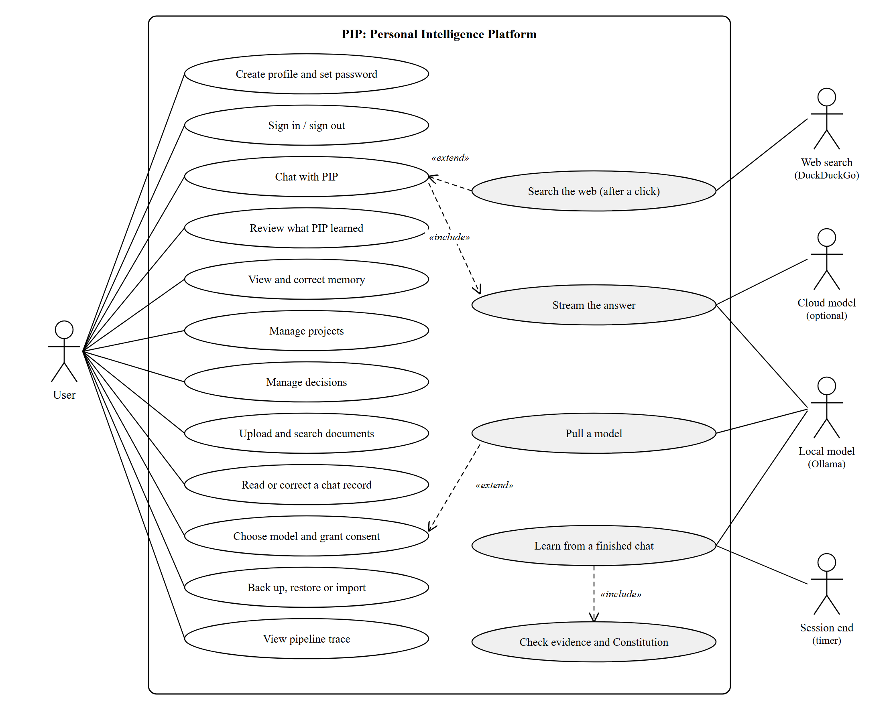
Figure 4.1: Use case diagram
Table 4.1: Use case descriptions
| ID | Use case | Actors | Description |
|---|---|---|---|
| UC-01 | Create profile and set password | User | Creates a profile and its encrypted database; the password must be at least 8 characters and cannot be recovered. |
| UC-02 | Sign in / sign out | User | Opens a profile's database with its password; signing out first queues the open chats for learning, then forgets the key. |
| UC-03 | Chat with PIP | User | Sends a message and receives an answer streamed word by word; includes UC-13. |
| UC-04 | Review what PIP learned | User | Confirms or dismisses each fact PIP has asked about; nothing is stored until the user confirms. |
| UC-05 | View and correct memory | User | Shows what PIP has stored about the user and lets the user correct or delete it. |
| UC-06 | Manage projects | User | Creates projects, changes their status and chooses the active one. |
| UC-07 | Manage decisions | User | Records decisions, changes their state, and accepts or dismisses decisions PIP proposes. |
| UC-08 | Upload and search documents | User | Adds documents to the profile's encrypted index, searches them and deletes them. |
| UC-09 | Read or correct a chat record | User | Shows the "where we left off" record of a chat; a corrected record is the user's and is not overwritten. |
| UC-10 | Choose model and grant consent | User | Selects the local model and grants or revokes consent, for a chosen scope, for each outside provider; extended by UC-15. |
| UC-11 | Back up, restore or import | User | Exports a profile to one encrypted file, restores it, or imports it into a new installation. |
| UC-12 | View pipeline trace | User | Shows which stages a message passed through and how long each took. |
| UC-13 | Stream the answer | Local model, cloud model | The model writes the answer; a cloud model is used only with recorded consent. |
| UC-14 | Search the web (after a click) | Web search | Extends UC-03: runs only when the user clicks the offered search, sending exactly the words shown. |
| UC-15 | Pull a model | Local model | Extends UC-10: downloads a local model; a cloud model offered through Ollama is refused. |
| UC-16 | Learn from a finished chat | Session end, local model | Runs after 2 idle minutes, a disconnect, sign-out or shutdown, or at the next start for a chat a crash left unfinished; includes UC-17. |
| UC-17 | Check evidence and Constitution | – | For each proposed fact: grounding, the evidence gate and the Constitution's rules, then write, ask or reject, with an audit row. |
The data flow diagrams use the Gane–Sarson notation: rounded boxes are processes, open-ended boxes are data stores, and grey boxes are external entities. A store or entity marked with an asterisk is drawn a second time only to avoid crossing lines.
The context diagram (Figure 4.2) shows PIP as one process with four external entities: the user, the local language model, the optional cloud model and the web search provider. The flows to the cloud model and to web search happen only with the user's consent, and the web search only after the user's click.
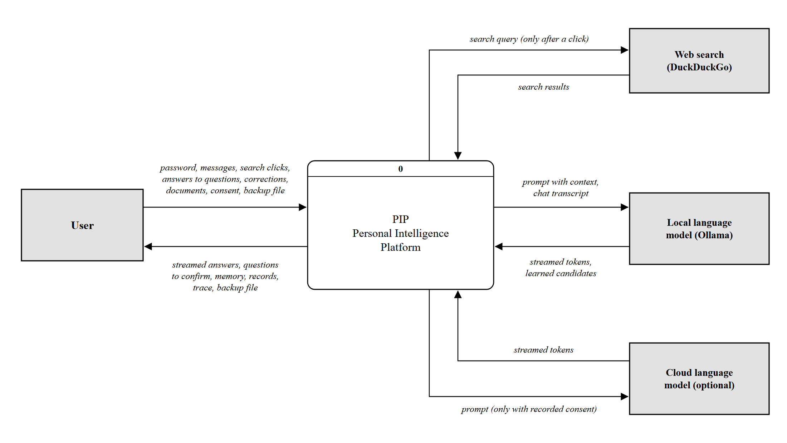
Figure 4.2: Context diagram, DFD level 0
The level 1 diagram (Figure 4.3) divides PIP into seven processes and eight data stores, plus the backup file. Processes 1.0, 4.0, 5.0, 6.0 and 7.0 serve the user's own management of their data: signing in, reviewing and correcting records, documents, models and consent, and backup. Process 2.0 answers chat messages, and process 3.0 learns at the end of a session. Process 3.0 uses six of the stores that 2.0 and 4.0 also use, so it is drawn below the others with copies of those stores.
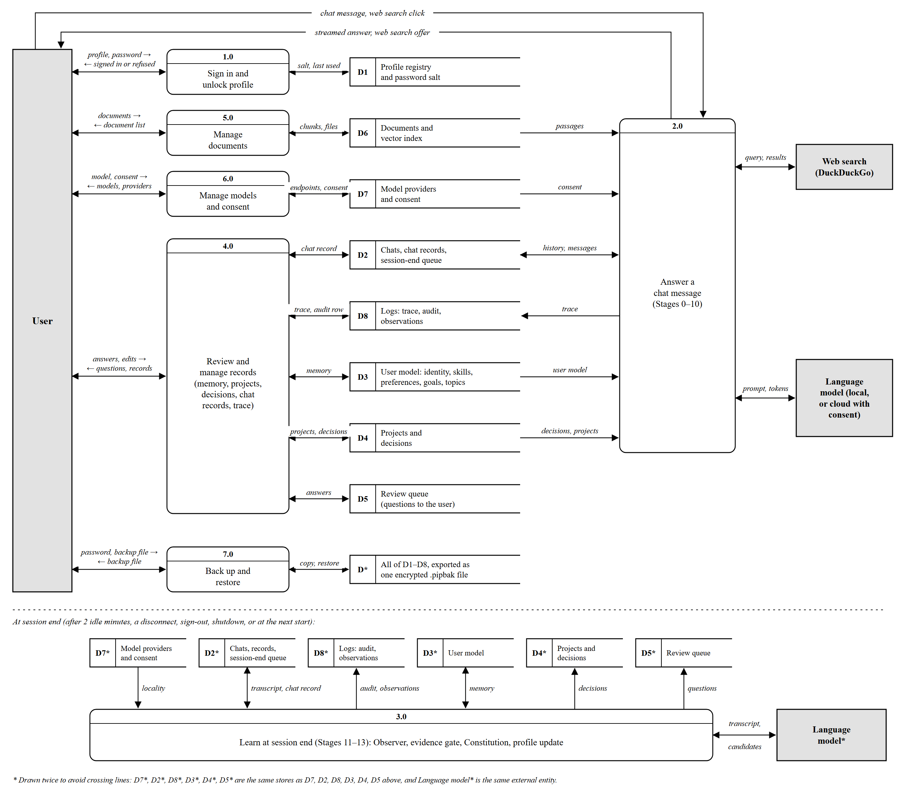
Figure 4.3: DFD level 1
Two level 2 diagrams show the two processes that matter most. Figure 4.4 breaks process 2.0 into the twelve steps of the message pipeline, Stages 0 to 10. After the intent is classified and the route chosen, the answer cache is checked; on a cache hit, the stored answer goes straight to delivery, skipping the look-ups and the model (the dashed line). Otherwise the decisions, memory and documents are looked up, a web search is added only if the user clicked for it, the context is assembled, consent is checked, and the model streams the answer. Only a chat's first message is cached, because a follow-up depends on its own chat.
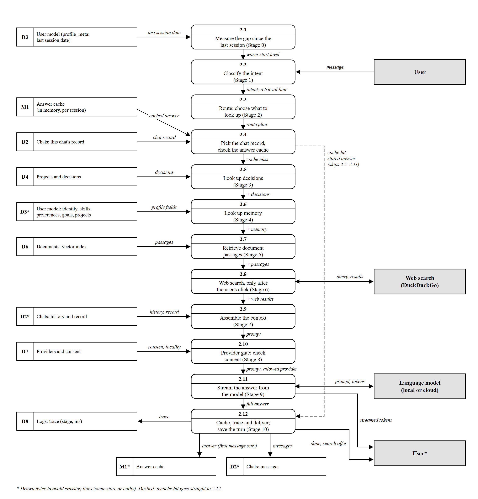
Figure 4.4: DFD level 2, process 2.0, answering a chat message
Figure 4.5 breaks process 3.0 into ten steps. The transcript is taken from the session-end queue; if the model is not recorded as local in both of its records, nothing is sent and the chat stays queued. Otherwise the Observer extracts candidate facts, decisions and the chat's record. Each candidate then passes grounding (is the quote in the transcript?), and one whose quote is not found is dropped with an audit row. The rest pass the evidence gate (do the user's own words support it?). Supported memories have their evidence counted and are checked against the Constitution; supported decisions are routed separately. A candidate the evidence gate refuses goes straight to the final step, which records the refusal (the dashed line).
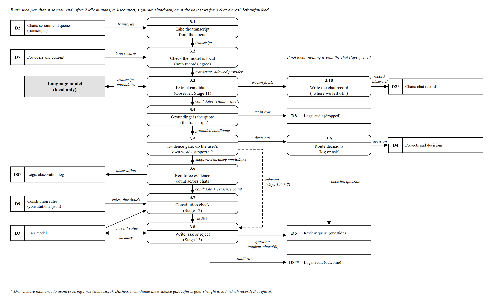
Figure 4.5: DFD level 2, process 3.0, learning at session end
Each profile's data is kept in one SQLite database file encrypted with SQLCipher. The schema has 33 tables. Figures 4.6 and 4.7 show the main ones in crow's foot notation.
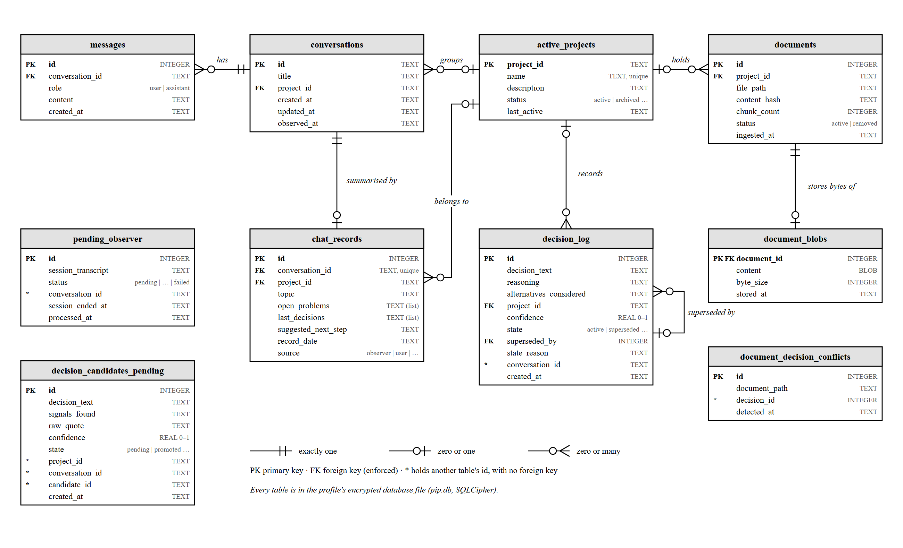
Figure 4.6: ER diagram, chats, projects, decisions and documents
Figure 4.6 shows the user's work. A project groups conversations, decisions, documents and chat records; each of these may also exist without a project, so deleting a project sets their link to empty instead of deleting them. A conversation has many messages and at most one chat record, and both are deleted with it. A document's bytes are kept in a separate table, deleted with the document. A decision can point to the decision that replaced it. Some columns hold another table's identifier without a foreign key (marked with an asterisk), such as the conversation a queued transcript came from; these links are kept by the program, not by the database.
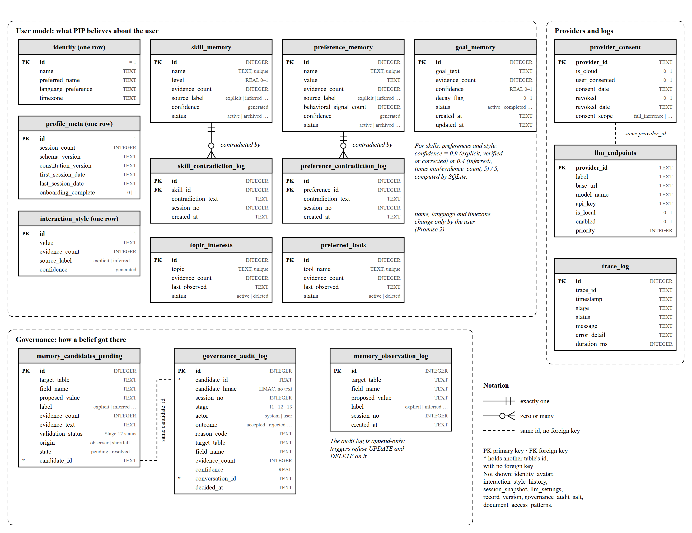
Figure 4.7: ER diagram, user model, governance, providers and logs
Figure 4.7 shows what PIP believes about the user and how each belief got there. The user model tables (identity, skills, preferences, goals, interaction style, topics and tools) are not linked to one another, because they are written only through the learning step and the user's own corrections. Identity, the profile's metadata and the interaction style each hold a single row. For skills, preferences and the interaction style, the database itself computes a confidence value from how the fact was learned and how many times it has been seen. The governance tables record the learning step: the questions waiting for the user, the observation log that counts evidence across chats, and the audit log, which holds one row per decision with a keyed hash of the fact instead of its text.
The database enforces a few rules itself, with triggers. A decision's text cannot be changed once recorded; the audit log and its salt can be neither changed nor deleted; and every write to a table that answers draw on increases a record version, so that a cached answer is never served after the user's record has changed.
Figure 4.8 shows the backend's packages and the imports between them, counted from the code. The transport package (api) uses all the others. The orchestration package (core) and the stages import each other, because the pipeline in core runs the stages and the stages use core's types, evidence gate and trace; core and the persistence package (memory) also depend on each other. The four layers of Figure 3.1 therefore describe roles rather than strict import rules. The one rule that a Git hook enforces is that nothing in the stages or in api imports the database, vector-index or Ollama libraries.
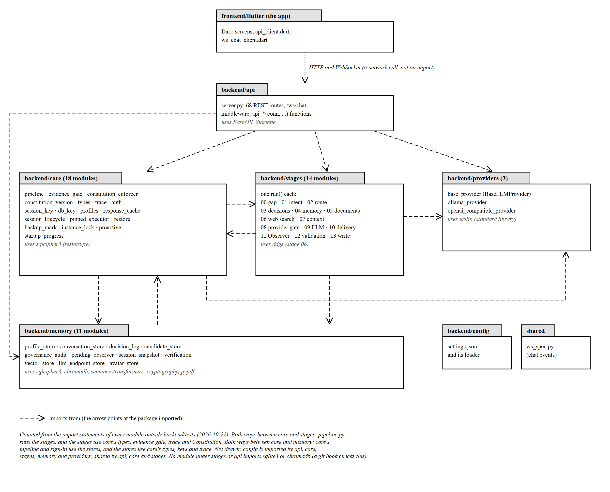
Figure 4.8: Package diagram of the backend
PIP is written mostly as module-level functions: each stage has one run function, and each store has functions that take the database connection as their first argument. Figure 4.9 shows the classes it does have. The providers form a small hierarchy: an abstract BaseLLMProvider defines chat, is_available and get_model_info, and OllamaProvider and OpenAICompatibleProvider implement it, so the pipeline treats every model the same way. The evidence gate is built from an EvidenceLedger, which holds the transcript's turns with who wrote each one, and an EvidenceVerdict, whose state is one of seven fixed values and which can be turned into the same ValidationResult that the ConstitutionEnforcer returns, so that every decision takes one path to the database. A SessionRegistry keeps one PinnedExecutor, a single worker thread, for each open chat, and two frozen data classes hold a profile's details and a provider's consent record.
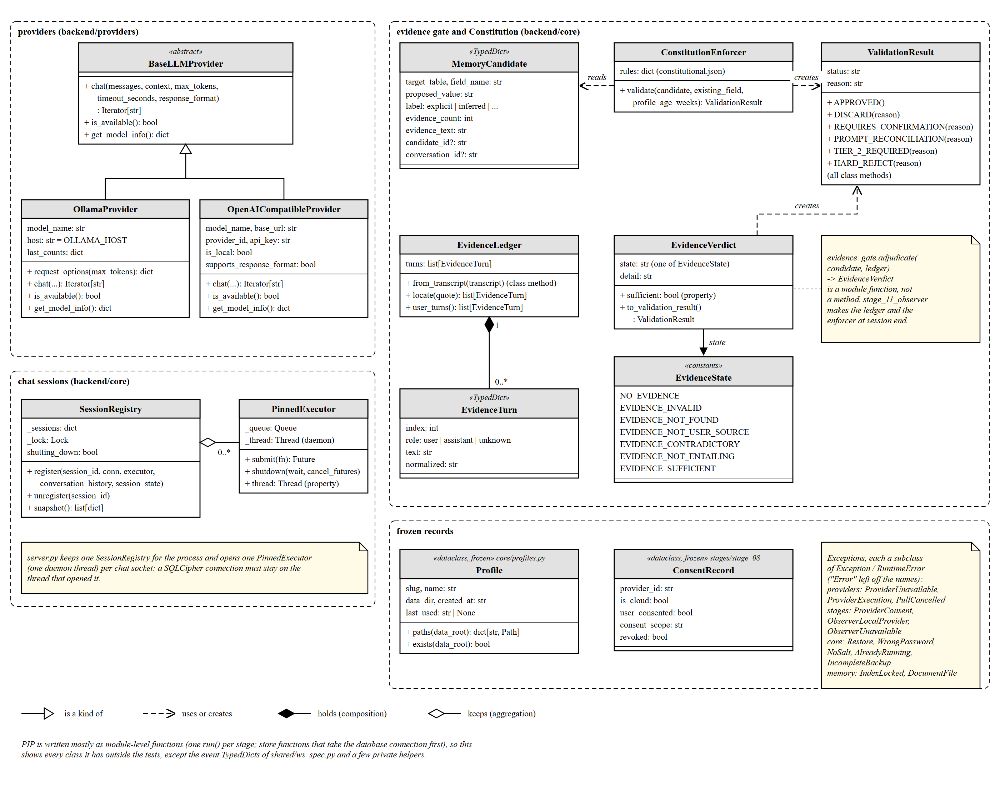
Figure 4.9: Class diagram
Figure 4.10 follows one chat message. The app connects to the chat WebSocket once, and the server checks the token, that a profile is signed in, and the origin. For each message, the server saves any earlier turns not yet stored and passes the message to the pipeline on the chat's own worker thread. The pipeline runs Stages 0 to 2, reads the chat's record and checks the answer cache. On a miss it looks up decisions, memory and documents, builds the prompt, checks consent, and streams the answer from Ollama, each token passing through the server to the app as it is written. The server then sends "done", saves the message and the answer, and, if the message could use the web, sends the search offer.
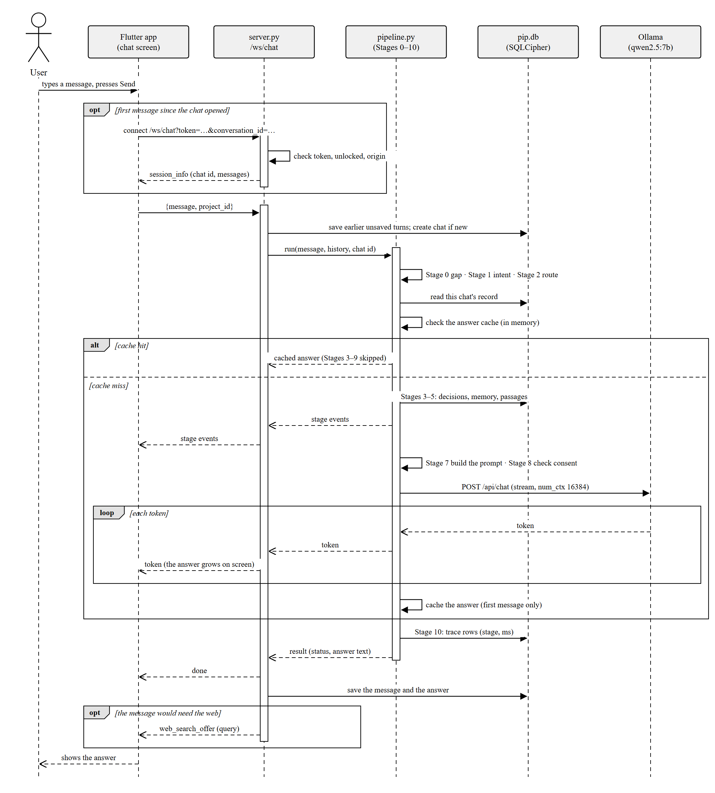
Figure 4.10: Sequence diagram, one chat message
Figure 4.11 follows signing in. The app asks for the backend's state and the list of profiles, and the user chooses one. When the password is sent, the backend reads the profile's salt and derives the key with PBKDF2-HMAC-SHA512 (256,000 iterations), then tries to open the database with it. A wrong password opens nothing, and each further wrong attempt waits a little longer. With the right key, the backend keeps the key in memory, records the profile as last used, and starts catching up in the background on any chats left unlearned.
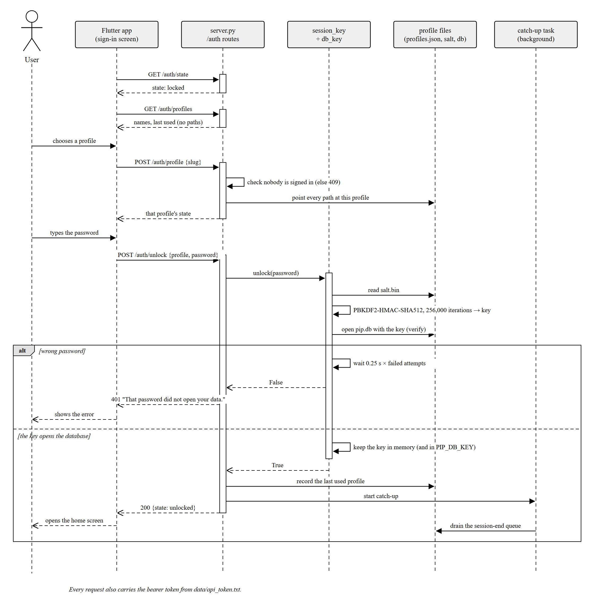
Figure 4.11: Sequence diagram, signing in
Figure 4.12 shows, as an activity diagram, what happens to each fact the Observer proposes. The diagram makes the order of the checks visible, and shows that every outcome ends with one audit row. A candidate that fails grounding or the evidence gate is dropped or rejected before the Constitution is consulted. A decision is logged or asked about under the decision rules. A memory has its evidence counted and is then given one of three verdicts: written, queued as a question for the user, or rejected. A fact that is supported but has not yet been seen often enough is asked about rather than dropped, at most twice per chat.
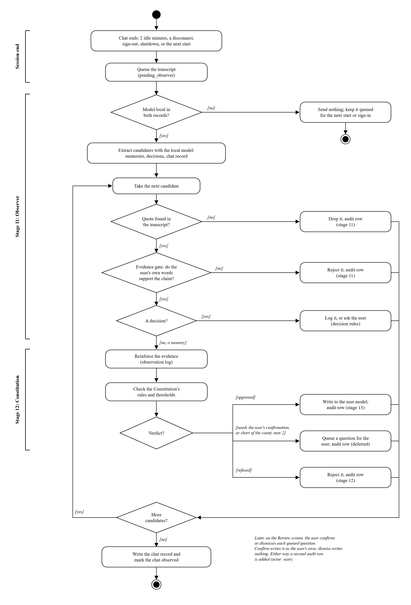
Figure 4.12: Activity diagram, what happens to a learned fact
The app has a sign-in screen and a main window with nine tabs: Chat, Review, Profile, Decisions, Projects, Documents, Providers, Backup and Trace, and a sign-out button. Five design choices shape the interface.
Figures 4.13 and 4.14 show two of these rules in the finished app; Section 5.6 shows each screen.
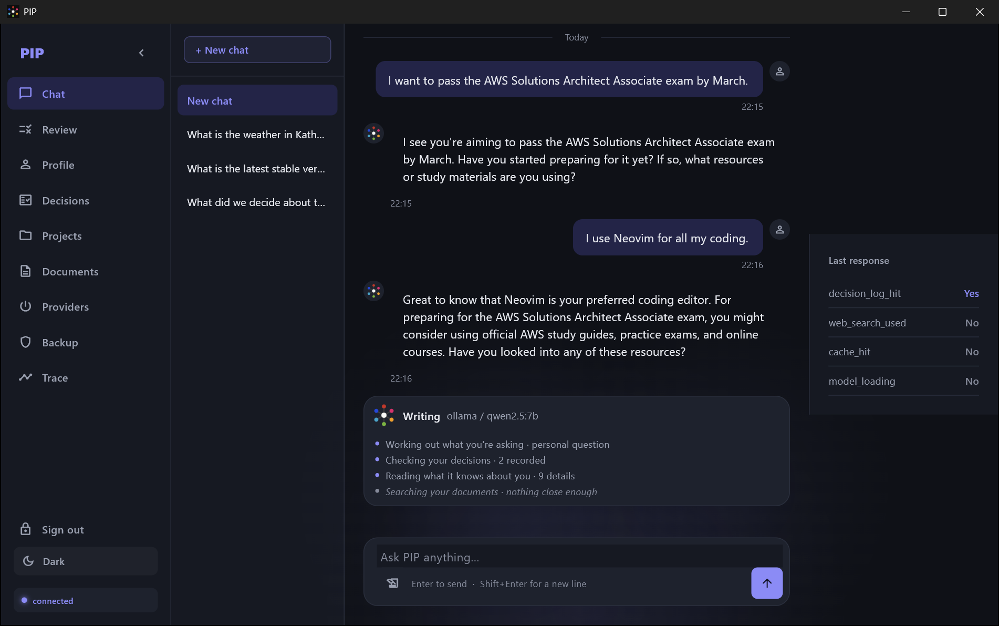
Figure 4.13: A chat in the dark theme
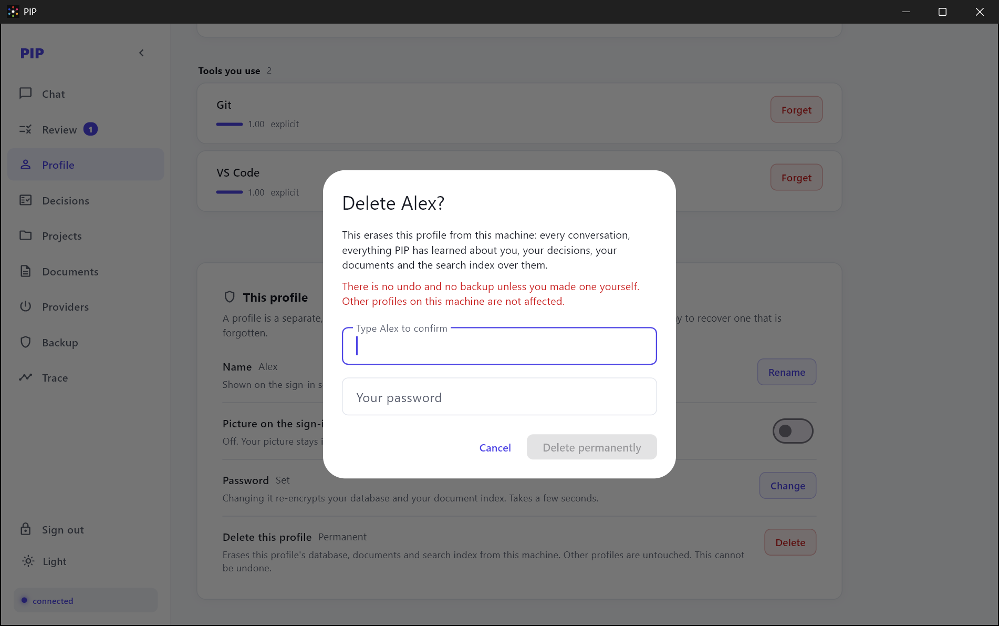
Figure 4.14: Deleting a profile asks for its name and its password